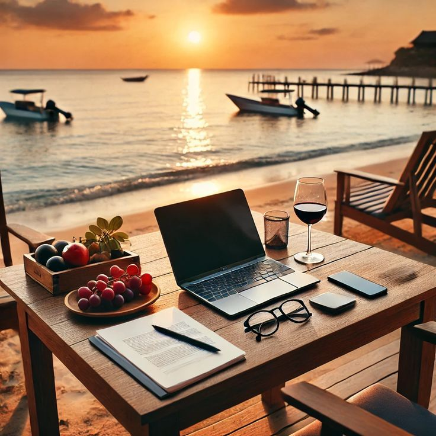
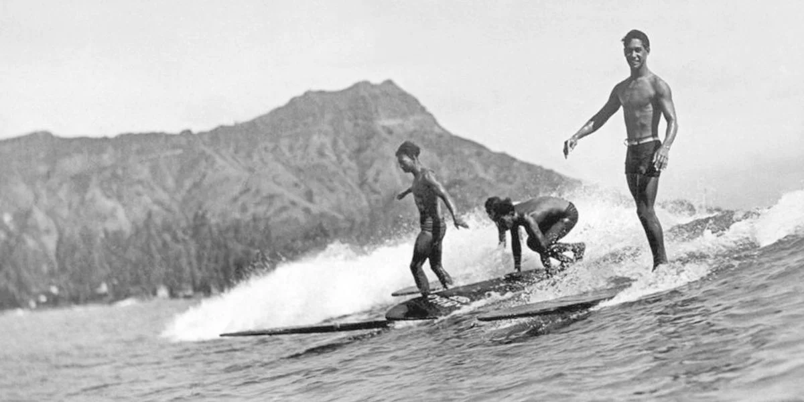
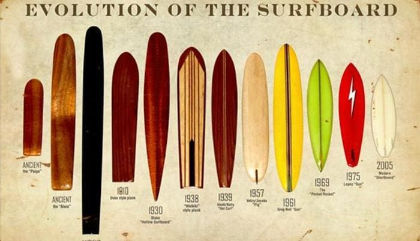
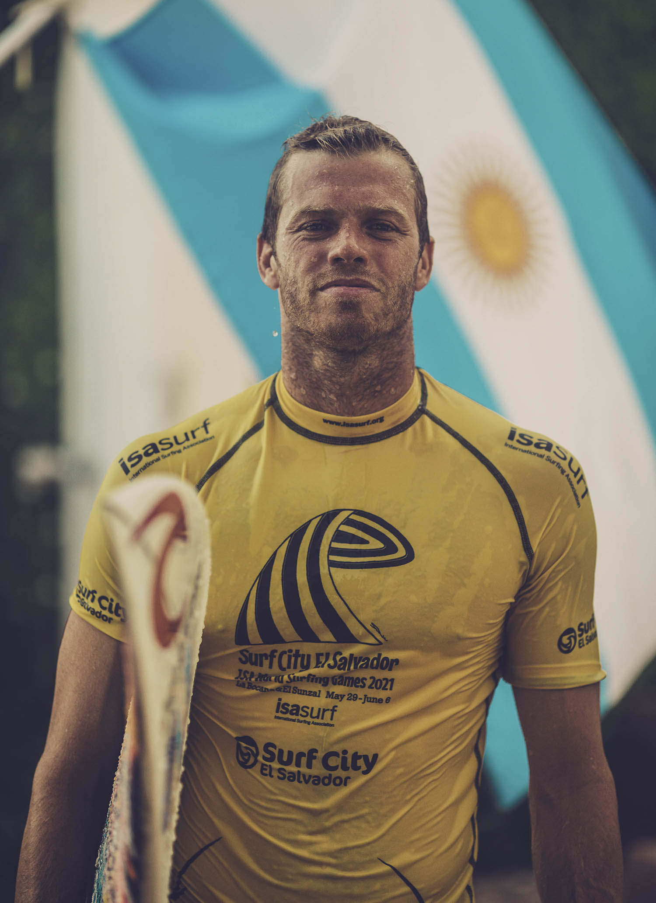
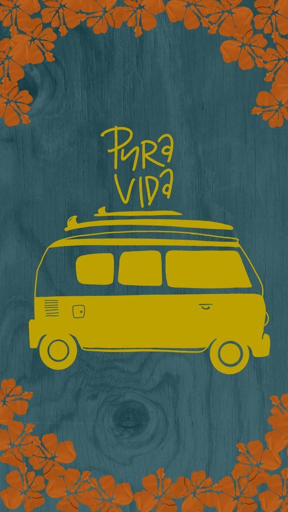

Mi visión, mi pasión.
¿Como surge este sentimiento?
Vivir en una ciudad costera y surfear desde siempre me enseñó que la libertad no es algo que se encuentra, sino algo que se construye. Para mí, el surf no es simplemente un deporte; es la filosofía que define mi relación con el mundo: una búsqueda constante de equilibrio, una conexión profunda con la naturaleza y ese espacio de introspección que solo el agua te puede dar. Este proyecto es mucho más que una página web; es mi punto de partida en el mundo del desarrollo. Nace de la necesidad de fusionar mi estilo de vida con mi futuro profesional. Mi objetivo es claro: convertirme en un desarrollador capaz de trabajar desde cualquier rincón del planeta, equilibrando el desafío constante de la programación con la pasión de viajar y surfear nuevas olas.


Historia del Surf.
"El surf no es un invento moderno, es un legado de reyes." Aunque hoy lo vemos como un deporte global, el surf nació hace siglos en las islas de la Polinesia. Para los antiguos jefes tribales, domar las olas no era solo diversión; era una forma de demostrar respeto, jerarquía y una conexión espiritual profunda con el océano. A principios del siglo XX, gracias a figuras legendarias como Duke Kahanamoku, el surf salió de las islas para conquistar las costas de California y Australia. Lo que comenzó con pesadas tablas de madera maciza evolucionó hasta convertirse en la cultura de libertad y aventura que hoy nos define. Hoy, surfear es mucho más que pararse en una tabla: es entender los ciclos del mar, respetar la fuerza de la naturaleza y buscar, en cada sesión, ese momento de paz perfecta que solo se encuentra dentro del agua.
Evolución del Surf.
"La esencia es la misma, pero las herramientas han cambiado el juego." La evolución del surf es una historia de ingeniería y obsesión por la eficiencia. Pasamos de las pesadas tablas Olo de madera maciza, que superaban los 50 kilos, a materiales aeroespaciales, resinas ultraligeras y núcleos de fibra de carbono. Cada gramo menos en la tabla se traduce en más velocidad y maniobrabilidad sobre la ola. Pero la revolución no se quedó solo en el agua. Hoy, la tecnología redefine nuestra conexión con el mar: desde modelado 3D para el diseño de tablas perfectas, hasta algoritmos de predicción que nos dicen exactamente cuándo y dónde va a romper la mejor ola del día. Como en el código, el surf busca optimizar cada movimiento. En esta intersección entre la naturaleza y la innovación es donde encuentro mi mayor inspiración: crear herramientas digitales que, al igual que una buena tabla, nos permitan llegar más lejos, más rápido y con mayor precisión.


El Surf en la actualidad
"Ganar ya no es una cuestión de suerte, es una cuestión de analítica." En la actualidad, la competencia de élite ha transformado al surf en un deporte de métrica pura. Los atletas ya no solo "sienten" el mar; analizan mapas de calor de sus maniobras, usan sensores inerciales en sus tablas para medir la velocidad de rotación y revisan repeticiones en 4K frame por frame. En el tour mundial, una décima de punto decide quién levanta el trofeo. La tecnología digital es el nuevo entrenador. Algoritmos de Inteligencia Artificial procesan millones de datos de tormentas para predecir con exactitud milimétrica cuándo lanzarse al agua. Ya no se trata de esperar la ola; se trata de calcular la probabilidad de éxito de cada movimiento antes de ejecutarlo.
El Surf como estilo de vida.
"No surfeo para escapar de la vida, sino para que la vida no se me escape." El surf es el eje que organiza mi mundo, es la búsqueda constante de fluidez. Vivir bajo la filosofía del surf significa entender que la paciencia es una forma de acción. Al igual que frente a un monitor esperando que un bug se resuelva, en el agua aprendés a leer el entorno, a mantener la calma bajo presión y a entender que la oportunidad perfecta solo llega para quien sabe esperarla y está listo para remarla. Ser surfista y desarrollador es elegir la libertad de movimiento sin sacrificar la excelencia. Es entender que el éxito no es llegar a la orilla, sino disfrutar del recorrido, aprender de cada caída y tener la disciplina necesaria para volver al lineup, siempre listo para la siguiente ola.

"El mar conmueve al corazón, inspira la imaginación y le brinda alegría eterna al alma."
"El surf te enseña que siempre hay otra ola en camino. Solo tenés que estar en la posición correcta para remarla."
"Entrás al agua cargando el mundo y salís sintiendo que el mundo es el que te carga a vos. El océano no solo sana, te transforma."
"Todos provenimos del mar, pero no todos somos del mar. Los hijos de las mareas tenemos que volver a él una y otra vez."